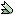
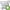

|
4 Logging in and User Settings
If you have an account on a RAMADDA server you can login by following the
login link:
 If you have forgotten your user name or password and if the RAMADDA server has been configured to send email there will be links shown to send you a reminder of your user name and to reset your password.
If you have forgotten your user name or password and if the RAMADDA server has been configured to send email there will be links shown to send you a reminder of your user name and to reset your password.
Once logged in there is a link with your name shown on the page which will take you to your user settings page.
4.0 User Favorites
The initial tag lists all of your "favorite" entries.
These are kind of like bookmarks in a web browser and, when they exist,
always show on every page in the left column. Whenever you are viewing an
entry you can add it as a favorite with the  icon
shown in the upper right toolbar.
{kind=link}
4.1 User Settings
This tab allows you to change your user settings and your password.
The Page Template is a user interface skin and allows you to change the overall
look and feel of the user interface. If language translations are define then
RAMADDA also supports a per-user language setting which provides translations of phrases
in the user interface.
4.2 Data Cart
The Data Cart facility allows you to add entries into it and serves as a wayy to make a folder of entries
for further use (e.g., download, copy/move, delete, catalogs, etc).
The Data Cart is not persistent and is only valid for a given user session.
Any time you see an entry you can add it to your cart with the  icon shown in the upper right toolbar.
4.3 Monitors
RAMADDA has a facility to define a monitor for new entries.
A monitor consists of a set of search criteria and an action.
When a new entry is added into the repository all of the monitors are
checked. If a monitor's search criteria matches the new entry then the action is
performed.